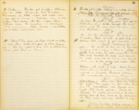
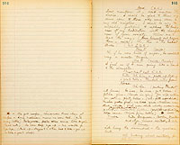

Lapse of 3 months. Deadwood. The Chinese Quarters. Rude board table on rocks on which is piled shirts, etc., on river bank.York
Music--Ah Sin discovered--song--speech. Business--ironing, etc. Enter York looking at his watch.
(L.2.E.) 3 o'clock! In my impatience I'm here before the stage coach--Why, there's Ah Sin! Poor chap, since the mysterious disappearance of Plunkett, he has withdrawn himself from the camp. I wonder if he hasn't a pretty good notion of what went with him? If I could only make him talk--I've got it. I'm wanting a servant--a good excuse for pumping him-- (aloud and going up stage) Ah Sin!
Ah Sin
Good day, John.
York
(C.) Good day.
Ah Sin
You wantee washee-washee.
York
(aside) Confound him, his only belief is in the universal uncleanliness of the American people. (aloud) I say, John, do you know what's 'come of Plunkett?
Ah Sin
Me sabbee. Maybe Plunkee go with pretty lady.
York
No--no--washee to-day, John. But I'm
Ah Sin
All litee. Me sabby. Mellican man too muchee chin-chin--Chinaman plenty workee.
York
(with great significance, looking at Ah Sin.) I have sent for the wife and daughter of your friend and benefactor, Plunkett. I have sent for them to come here so I might have some excuse for ferretting out the reason of his disappearance; you understand? (aside) His face is as unintelligible as a tea chest. (aloud) Well, I have determined to offer my house to these helpless women. (aside) No delight, no satisfaction, and yet his poor old benefactor would have fought for him. Well, it is the gratitude of the heathen.
Ah Sin
Missee Plunkee go to you.
York
Yes, and with this addition to my household, I shall need another servant, you sabbee?
Ah Sin
Me sabbee. Me sabbee. Velly good man fo' you--Velly good man fo' missee Plunkee.
York
Suppose you take the place.
Ah Sin
Me washee-washee.--Pay better.
York
You can washee-washee all the same. Shan't want you except at meals.
Me sabbee meal time--Chinaman likee meal time. You pay six dollar a week?
York
Yes.--Is it a bargain?
Ah Sin
All litee John, I come to-morrow noon--no can come to-day.
York
(going) That's bad, but I'll get along some way. (aside) I've done a good strike! (goes up.)
Ah Sin
(aside) May be me mighty poor servant--don't know how. Well, me watchee-watchee do everything see Mellican man do--pretty soon me learnee. (goes into house)
Broderick
(stopping) Boys, I've changed my mind.
1st Miner
What's the matter now?
Broderick
It's not fair for me to help question Ah Sin. I hate him. I'd see something suspicious in every answer he made.
2d Miner
You're over-squeamish, Broderick. You were sound when you suggested this examination of him, and as for hating the Chinaman, why--
3d Miner
(interrupting) Now you hold on. That's manly in Broderick. I say, let's 'tend to it ourselves.
All right.
Ah Sin re-entersBroderick
(going--aside) That wasn't badly done! (exits)
York comes down.1st Miner
(to Ah Sin) Looky here, my boy, there's a considerable suspicion around that you know what's become of old Abe Plunkett.
Ah Sin
No shabbee 'splicion. Me got 'gagement. Me go. (going)
2d Miner
(restraining him) No, you ain't going, either. Things look ugly 'gainst you.
1st Miner
You bet they do.
York
(returning) Suspicions against him? What are they?
2d Miner
What are they?-- (pause--a little puzzled) Why they are suspious of course.
York
But--I mean the particulars.
2d Miner
Well--a--he--a--he-- (to 3d miner) W-was there any particulars?
3d Miner
Well,--he--a--as I understand it, he--a---- Oh this ain't no time for conundrums!
2d Miner
(relieved) That's the talk! You just come along, Ah Sin. If particulars is wanted I judge we can milk 'm out of you with a
Ah Sin
(taking refuge behind York.) Me not done nothing, me good Chinaman.
York
If Ah Sin is suspected, let the law officers take up his case.
1st Miner
We can 'tend to his case ourselves.
York
There is no occasion. It is the law's business--leave him to the law.
1st Miner
But don't I tell you, we ain't going to leave him to the law.
York
I must insist. If you take him I shall appeal to the law in his behalf. Your suspicion seems to be only a misty one, at best.
3d Miner
Come to look at it, it's so, boys.
2d Miner
Rot it, I thought we had particulars; but I don't seem to see what's become of 'em.
York signals Ah Sin to slip away, which he does and exits into house.1st Miner
Lookee here--let's go and get 'em--and then take him.
2nd Miner
All right. Now Ah Sin, you stay here till--Why, he's gone. Mr. York, did you send him off?
York
He has only gone on an errand.
Mr. York, if Ah Sin escapes, you might wish you hadn't taken so much on yourself.
York
That may be, and may not. I'm willing to risk it. (exit R.1.E.)
The miners move off consulting together.2d. Miner
It's just as you say. It is sort of queer conduct on York's part. Blamed if it ain't. (exit miners.)
Judge Tempest
(C) Bother these mountain roads--I wish I had taken the public coach and paid no attention to Mrs. Tempest's aristocratic requirements, she and Shirley must take the consequences for a while. Now I have only 10 minutes to catch the up stage, to keep my appointment at Fiddleton. What's to be done? Hang it. Ah! (looking around) Ah, here's a Chinaman--I say, John.
Ah Sin
How do, John.
Judge Tempest
Do you know a Mr. York hereabouts?
Ah Sin
Me sabbee York, velly well.
Judge Tempest
(aside--with impatience) The imperturbability of these Chinamen is insufferable. (aloud) Well, come here!
You want washee-washee.
Judge Tempest
(furiously) No! Confound your washee-washee--Come here I say. (Ah Sin slowly shuffles forward) Do you see that hill? (pointing)
Ah Sin
No sabbee hillee. Me washee-washee.
Judge Tempest
(seizing him by the collar) Blockhead! Look!--There,--look! The other side of that hill lives Mr. York. Take him this note and you shall have--a dollar. (handing note.)
Ah Sin
Sabbee dollar.
Judge Tempest
(sarcastically) Of course you do!
Ah Sin
Mellican man no sabbee dollar?
Judge Tempest
What the mischief does he mean? Pshaw! Well, tell him, the ladies are awaiting him on the summit of the hill. (horn blows)
Ah Sin
Mellican man plenty blowee hornee--got some fish.
Judge Tempest
Hang it, there's the coach; why the devil don't you go? (hesitates looking at Ah Sin, who is regarding note quietly.) Go, at once! (exit hurriedly. L.U.E.)
Ah Sin
Bigee foolee, wantee Chinaman walkee-walkee-walkee-walkee topside hillee no good Chinaman. York say he come bimeby--all litee--me waitee. (looking off) Mellican lady comee--Plunkee wife--Plunkee daughter maybe--me watchee, all litee John. (exits into house)
(C.) I can go no farther; of all the insane projects of your father, this transcends everything. The idea of leaving us here!
Miss Tempest
(L.C.) I'm glad our carriage came to grief. It's so awfully romantic and all that sort of thing. Here we are, two helpless women waiting for a man to turn up.
Mrs. Tempest
(angrily) It's perfectly exasperating!
Miss Tempest
Well, you have no one to blame but father and yourself. It was all his fantastic idea that we should spend a day or two with this dreadful prodigy of his--this poetical miner, this elegant stonebreaker,--this Mr. York.
Mrs. Tempest
My child--why do you permit yourself to hate a man you have never seen?
Miss Tempest
Why am I asked to be interested in a man I have never seen? Mother, do you think I'm an imbecile? Do you think I don't know that this man, York, is the eligible person whom you have picked out for me? Do you think I have not fathomed the reason for Papa's discreet absence? For your own discreet presence on this occasion?
Heaven help the child! Why, he is the dear friend of your father. And you, why you were willing enough to come a day or two ago.
Miss Tempest
(aside--sighing) That was because I expected to find the original of my photograph--Eh--what-- (looking out at L.)
Mrs. Tempest
(not noticing her daughter) You must remember too that this Mr. York--has been to this moment, unadvised of our arrival. He has hardly got the note yet, which your father said he would send him.
Enter Ah Sin--observing York coming and tearing up letter.Ah Sin
York come now, no goodee he catchee lettee now. (exits R.2.E.)
Enter York L.U.E.York
(aside and starting) Heavens! 'tis she!--And the living image of the photograph! Plunkett has not lied! (business--coming forward--aloud.) A thousand pardons, ladies, but surely the stage has arrived early--I did not expect you for 20 minutes. (both ladies recoil.)
Miss Tempest
(aside) 'Tis he! (aloud) The stage? There's some mistake. (keeps Mrs. T. back with her hand.)
York
(with grave politeness, perceiving her perplexity) Pardon me, but I have not introduced myself yet. I
Mrs. Tempest
(coming forward) But, my dear sir, we are--
Miss Tempest
(Xes to C.--holding her back.) You must excuse her; the fatigues of the long journey have exhausted her. (aside) Be quiet, mother.
York
(R. confusedly) I presume I am addressing the original of this photograph? (shows photo.)
Miss Tempest
(C. advancing and looking at photo.) You are, sir.
Mrs. Tempest
(L. struggling to get forward--but held back by Miss T.) But really--I--
York
(apologetically) Then Miss Plunkett, I ask your pardon again for reviving distressing memories. Let me beg you to allow me to withdraw a moment while I order a carriage to take you to your late father's home. (exits L.1.E.)
Mrs. Tempest
(impulsively) What is the meaning of this masquerade?
Miss Tempest
Only this, he has mistaken you for the wife, and me for the daughter of the gentleman who once befriended me here. I told you all about it. (aside) I didn't tell her who I mistook him for.
Mrs. Tempest
(in alarm) But my child, he will return in a moment and discover the mistake.
Miss Tempest
Not if you will help me. (going down stage) Mother, I've always been a good girl, hav'n't I?
Mrs. Tempest
Well--perhaps a trifle wild and wayward and inconsiderate for one of your position. But, yes--
Miss Tempest
And my vagaries, as you call them, have never brought me to any harm?
Mrs. Tempest
Humph!--not as yet!
Miss Tempest
Then hear me. There's a little mystery here deeper than you see on the surface. I want to get to the bottom of it. (aside) I must know how he got that photograph. (aloud, emphatically) Mother, for 24 hours, at least, you must be Mrs. Plunkett.
Mrs. Tempest
(astonished) But my child--
Miss Tempest
Calm your chaste emotions, my dear mother. There is no implied disloyalty to Judge Tempest. Your doting husband Mr. Plunkett is missing.
This is intolerable--
Miss Tempest
One moment, mother. You wish me to accept the hospitality of Mr. York. I will on only one condition--that I shall do it as Miss Plunkett.
Mrs. Tempest
But what will this lead to?
Miss Tempest
To the arrival of my father a day later, and an explanation of this harmless sport, nothing more.
Mrs. Tempest
But if I should consent to entertain this folly, what am I--what am I to call you? What is your Christian name?
Miss Tempest
He will furnish that. He will let that slip sometime. Meantime, dear Mother, call me "My child," "My daughter"--or (embracing her) "My darling!" (aside) He'll understand that. (coquettishly)
Mrs. Tempest
Well, well--of all your follies--
Miss Tempest
This may prove the most practical--but hush--Here he is--
Re-enter YorkYork
(bowing) A carriage is waiting for you at the foot of the hill. Ladies, let me lead the way for you. (exeunt omnes L.U.E.)
Music Enter Ah Sin.

Plunkee got 2 wifee--Mellican man no likee Chinaman hab 2 wifee--Chinaman no likee wifee sell wifee--poor wifee got no home-- Mellican man no likee wifee, lun away, let poor wifee starve--Mellican man too muchee--clivilized. More Mellican lady comee--me watchee. (goes to table and lights pipe--sits)
Mrs. Plunkett
(snuffling) My poor Plunkett! My poor dear sainted husband. (L.) Like enough this lovely scene was the very last his dear eyes ever tackled. (sobs)
Miss Plunkett
(R.) My, but this Californy's the land for me! I reckon there's no end of gold here, and fellows that want to get married! (Miss P. has gone up stage and looks at clothes on line--then looks at a pair of shoes hanging up--Ah Sin goes to line, and snatches away shoes--puts them in house.)
Mrs. Plunkett
(continuing her rhapsody) No doubt he has set on these rocks a many and a many a time-- (stoops slightly and kisses the rock reverently) Roosted here and smoked his pipe and darned his socks and ate his beans and thought about us, so far away and cried. (sobs)
Miss Plunkett
Fellows with loads of cash. Becky Simpson hadn't been in Californy a week 'till she married a hundred thousand dollars, with considerable of a man thrown in.
Mrs. Plunkett
(still sobbing and rhapsodizing) Dear me, dear me, to think his gaze, has gazed on that cabin there and the mountains over beyond and maybe that mule yonder--Maybe he knowed the mule, personally--he was always fond of 'em, and as for jackasses--Oh, they were like own brothers to him. (sobs)
Ah Sin has been poking around in their rear for awhile, observes that Miss P.has dropped her handkerchief. He swipes, wanders away, puts it up his sleeve.
Miss Plunkett
I wonder what sort of a man is this York that's sent for us? Like enough he's rich and wants us here so as to marry me--or mother!
Mrs. Plunkett
Poor dear, poor dear--how it all comes back to me. The last time I saw him, 13 years ago. Little did I think when I shied the skillet at his head that it would be the last time. I (sobs) I should ever see him dodge. When he said he was going away for ever and ever, little did I think that for the first time in his life, his tongue missed fire, and he was telling the truth. My child, my child. (to her daughter)
Ah Sin
Plunkee got 2 childee--heap difference--other one high steppee stock--2:40 stock, plenty common stock, hossee car stock.
Mrs. Plunkett
Do you hear me?
Miss Plunkett
Yes, I hear you--I hear you, Mother, but I'm trying to study up whether that Mr. York's letters ever said, whether he was rich or not, or whether--
Mrs. Plunkett
Oh, my child, how can you be so worldly when the whole scene around you is reeking with suggestifications of your poor dead father, so to speak?
Oh, bother all that, mother, I never saw him in my life--Well of course I saw him, but I don't think I ever had a real good look at him, you kept him humping around so!
Mrs. Plunkett
What do you mean, child?
Miss Plunkett
Well, you always had him up a tree or shinning for shelter under the bed. He wasn't ever still long enough for me to get acquainted with him.
Mrs. Plunkett
(severely) It is shameful--shameful to hear a daughter talk like this, right here where the lastest--Oh, if his dear spirit is here--
Miss Plunkett
But it ain't, mother. And it wouldn't stay if it was. And I'm not going to stay here either. Much Mr. York cares to meet us! Said he would be on hand when the stage came. This looks like it. (X.R.--to Ah Sin.) Young man, do you know Mr. York?
Ah Sin
(to Miss P.) Good day, John.
Miss Plunkett
(indignantly) My name is not John.
Mrs. Plunkett
(chipping in) A very dear and noble friend of my poor lamented husb--
Miss Plunkett
(impatiently) Never mind about that.
Ah Sin
Yes, me sabbee York.
Miss Plunkett
Well, he is expecting us. Doesn't know we have arrived. Would you mind going to
Ah Sin
Can find in a minute,--no hab got hap dollar for Chinaman-- (Miss T. is looking around for her handkerchief.) No hab got no can find-- (to Miss T.) You losee litte something, eh?
Miss Plunkett
(gladly) Yes--Did you pick it up? Give it to me!
Ah Sin
Know litte something if you see him?
Miss Plunkett
Certainly I'll know it. I could pick it out from among a million. Give it here.
Ah Sin
Maybe he belong to gentleman no lady.
Miss Plunkett
Perfectly absurd--any idiot could tell at a glance that it couldn't belong to a gentleman. I tell you it's mine!
Ah Sin gives Miss P. a stocking rolled up and exits--Miss P. lets it unroll--flings it from her with a shriek and is about to faint--whenMiss Plunkett
Oh, my, here comes Mr. York now, anyhow somebody's coming-- (begins to furbish up her spitcurls and arrange her dress) Nice enough looking man--Mother, we needn't seem to see him--let him make the advances.
Enter Broderick L.U.E.Broderick
(aside) They're not back yet! Why didn't I load them with particulars in the first place. (starts violently and shakes as with an ague.) What was that!--nothing, nothing. Every
Miss Plunkett
(L. aside) So it ain't Mr. York. (aloud) If you will be so kind. We are the wife and daughter of the late Abner Plunkett, who disappeared-- (Broderick starts) Why, what is the matter, sir?
Broderick
(annoyed) Oh, nothing, nothing. (X.C.)
Mrs. Plunkett
(L.) But you've turned so pale. Here--take a smell of this-- (forcing smelling bottle on him) it'll fetch you. There--I told you so.
Broderick
(C. strangling aside) Oh, curse her. (X.L.)
Mrs. Plunkett
There now, set down a minute and you'll be all right again sir.
Broderick
(they both speak at once) Oh, no, it isn't necessary--
Mrs. Plunkett
I know them turns. If my poor husband was here-- (Brod. shows signs of discomfort) --but you poor dear soul (snuffling) he can't ever come anymore, for it's my belief some scoundrel murdered--You must sit down sir, you must indeed--it's coming on worse'n ever.
The ladies assist Brod. to a log L. and sit down one on each side of him
(aside) Goodness, what diamonds! Why, this man must just simply roll in money. If he ain't married, I-- (aloud with a feeling look) if we knew where to send for your wife--
Broderick
I hav'n't any, ma'am.
Miss Plunkett
(dumb show of satisfaction--aside) That took! How sad at such a time, to have no-- (with a tender glance) Perhaps you are chilled--will you let me-- (she turns up her side of his coat collar on the side that is towards her.)
Mrs. Plunkett
Poor dear, to be in his state, and not got any pardner-- (aloud) You must take good keer of yourself when you have these turns--Mayn't I-- (she turns up her side of his coat collar--she receives a covert savage glance from her daughter and returns it with interest.)
Broderick
I'm a good deal better, now, thank you. Let me walk a little--It will refresh me. (rises and walks) Vulgar cattle!
Miss Plunkett
(aside) He'll do.
Mrs. Plunkett
(aside) Poor thing, he needs a pardner, bad--
Broderick
(aside) It wasn't a false report then. York has sent for these people--Damn him! They must not get into his hands, I must get them into mine. (aloud--coming forward.) Ladies, your references to Mr. Plunkett,
Miss Plunkett
You, sir?
Broderick
Yes, my name is Broderick of whom your father may have spoken in his letters. My friend and neighbor, Mr. York--
Miss Plunkett
Our friend too, he is expecting us--
Broderick
Yes, I am aware of it. But he was called suddenly away from the camp an hour ago on business of the last importance, and he asked me to offer you the hospitalities of my house for a few days, until his return. Will you do me the honor, and the great pleasure to accept?
Miss Plunkett
(aside) This is luck! (rising)
Mrs. Plunkett
(aside--piously--rising) Hear that! I do believe 'twas preforeordestinated beforehand! Because he needed a pardner.
Miss Plunkett
It is too generous of you, Mr. Broderick. If you are sure that we won't discommode--
Mrs. Plunkett
It is too generous, it is indeed. Why, it's like entertaining angels unawares. But if you are sure we won't disfranchise your arrangements?

(X.C.) Don't mention it--don't mention it, ladies. I shall be glad to throw my doors open to those who were dear to my old neighbor, I shall be only too selfishly grateful to replace the loneliness of my habitation with the cheerfulness of your society. Allow me to lead the way--(bows himself out before them--aside) Oh, this is the luckiest stroke! (exit L.U.E.)
Miss Plunkett
(aside) Oh, if he were built of sugar, he couldn't wag a sweeter tongue.
Mrs. Plunkett
(aside--piously) I feel as if I am going like a lamb to the slaughter.
Enter Ah Sin.--picks up stocking and goes to table--Plunkett enters from house.)
Ah Sin
(pushing Plunkett into house) Go inee, go inee--go to bedee--I fetchee ginee-- (hands in gin.) You wife catchee, you catchee plenty hellee-- (sits--fills cup and drinks) Muchee goodee ginee--me likee ginee--Mellican man dlink whiskey--Ilish man dlink whiskey makee muchee go whoop (throws up his arms and loses cup.) --makee plenty fightee. (goes to fill cup and finds it gone) Allee same. (drinks from bottle) Me got wifee, Chinaman know when got nufee--Some Mellican man no can tell. (puts away bottle) Feelee goodee, feelee allee same likee angel. (head nods) No can keep eye up--me wantee go bye-bye. (stands up--staggers to C. and then back to table--gets up on table and goes to sleep)
Music. Enter Ferguson--Boston, Masters and other miners excitedly L.U.E.1st Miner
Let's hang the scoundrel--the yaller brute.
All looking about excitedly for Ah Sin.
(who has gone under shed.) Here he is--
Omnes
Drag him out--Lynch him. etc.
They drag Ah Sin to C.Ah Sin
Me no sabbee.
1st Miner
Come, it's no use your playing ignorance on this camp any longer--
Ferguson
(R.) You won't get off for want of particulars this time.
Ah Sin
Me no sabbee tickler.
Boston
You and York were last seen together in Plunkett's company.
Ah Sin
Me no sabbee Plunkee.
Ferguson
String him up.
All make a movement.1st Miner
Come, you know something about Plunkett, out with it! (threatens him.)
Ah Sin
Me no sabbee Plunkee.
1st Miner
Here's York's pistol. (shows it)
2d Miner
Found to-day on the river bank below the claim.
Ferguson
You must know something about it.
Omnes
Yes--of course! (all turn on Ah Sin) Make the Chinaman confess what he knows of the affair--
1st Miner
Look here, John, you know all about Plunkett--out with it or you'll swing with York.
Music
Ah Sin
Me no likee swingee--swingee no good for Chinaman.
Omnes
Out with it.
Boston
You've got to talk.
Ferguson
Yes, or hang.
1st Miner
Talk and hang both!
They all make a dive for Ah Sin, who scrambles between their legs and upsetting one
or two of them--jumps on the table, seizes flat iron and shreiking and gibbering
Chinese.
Picture of consternation by miners.